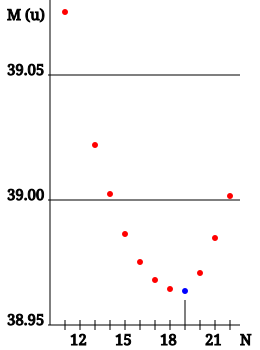

Isobars are atomic nuclei of different chemical elements that share the same mass number A — the total count of protons and neutrons — but differ in atomic number Z. The term was coined by British chemist Alfred Walter Stewart in 1918, from the Greek isos (‘equal’) and baros (‘weight’). Because beta decay conserves A while changing Z by one unit, the parent and daughter nucleus in any beta decay are always an isobaric pair.

T.vanschaik / Wikimedia Commons (CC BY-SA 4.0)
{kind=link}
Distinction from related terms. Isotopes share the same Z but differ in N and A (e.g., carbon-12 and carbon-14). Isotones share the same N but differ in Z. Nuclear isomers share the same Z and N but differ in energy state. Isobars share A but differ in both Z and N: for example, 40Ar (Z = 18, N = 22) and 40Ca (Z = 20, N = 20).
Beta decay and isobar chains. In beta-minus decay, a neutron converts to a proton, increasing Z by one while leaving A unchanged. In beta-plus decay or electron capture, a proton converts to a neutron, decreasing Z by one. Any radioactive isobar therefore decays along the isobar chain, stepping through successive elements until it reaches the most energetically stable isobar — the one with the greatest nuclear binding energy for that A. A well-studied example is the A = 40 chain: 40K (potassium-40, half-life 1.248 × 109 years) undergoes branched decay, with approximately 89% beta-minus decay to 40Ca and approximately 11% electron capture to 40Ar. Both 40Ar and 40Ca are stable endpoints of the chain, and the accumulation of 40Ar from this process is the basis of potassium-argon geochronology.
Mass parabola. For a fixed A, the Bethe–Weizsäcker semi-empirical mass formula predicts that nuclear mass varies parabolically with Z. The dominant terms responsible are the Coulomb repulsion energy (proportional to Z(Z − 1)) and the asymmetry energy (proportional to (N − Z)2), which together create a parabola in mass versus Z with its minimum at an optimal proton number. For odd-A isobars, one parabola exists and only one stable isobar is typically found. For even-A isobars, the nuclear pairing term splits the parabola into two offset curves — one for even–even nuclei and one for odd–odd nuclei — so two or more even–even isobars can both sit near the minimum and be stable against beta decay. Approximately 79 even-A values have two stable isobars (for example, 86Kr and 86Sr).
Mattauch's isobar rule. Josef Mattauch (1934) formulated the empirical rule that if two adjacent elements have isotopes of the same A, at least one must be radioactive. This follows directly from the mass parabola: two adjacent Z values cannot both sit at the minimum.
Significance in nucleosynthesis. Isobar chains are central to the production of heavy elements in stars. In the r-process (rapid neutron capture), which is believed to occur in neutron star mergers and core-collapse supernovae, nuclei far from the valley of stability undergo successive beta decays along each isobar chain after the neutron flux ceases; abundance peaks in solar-system material at mass numbers of approximately 80, 130, and 195 correspond to 'waiting-point' nuclei near closed neutron shells. In the s-process (slow neutron capture), a stable isobar on the neutron-rich side of the valley shields its neutron-deficient isobar counterpart from receiving any s-process material, giving rise to the class of elements known as p-nuclides that require a separate production mechanism.